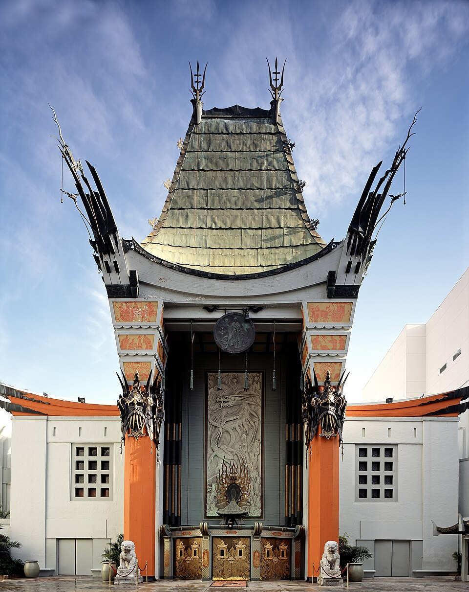
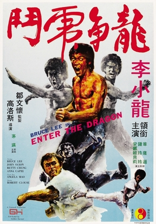

Output is not reception
FILTEREDSeparate panels keep production counts and mean scores on their own scales. The 2020s are incomplete.
产量柱图与评分线分别读：723与195是已收录数量；评分从5.66回升到6.01，不能直接说产业复苏。
Hong Kong cinema travelled the world.
Did its industry follow the same story?




From international stardom to contemporary recognition, visibility is only one part of the story. We look at what changed inside the industry.
Venues form a visual collage, not a claim that these films premiered there. Rush Hour is a US production used to illustrate star crossover. 2026 award source: HKFAA · Image credits & sources
Filters update production, genre, reception and the film table. Other evidence remains fixed; the network is a historical overview.
Production contracts. Audience ratings recover. The films left in the frame are changing.
Separate panels keep production counts and mean scores on their own scales. The 2020s are incomplete.
Share of genre tags, not share of films. Films may carry several tags; the eight displayed genres need not sum to 100%.
Plot vocabulary per 1,000 words · 158 usable Wikipedia plot sections, sampled from highly voted films.
The stars travelled. How did the network that connected them change?
Original Demo projection · node size indicates distinct co-stars; colour indicates community. Hover to inspect a performer. This node overview does not display edges.
Performer counts and network modularity by decade. Greater modularity indicates clearer separation between communities.
The report's largest connected component falls from 97.8% of performers in the 1990s to 84% in the 2020s. This describes casting patterns, not ownership or employment.
Reception, IMDb attention and box-office performance answer different questions.
IMDb votes are a proxy for online attention, not cinema admissions. Dashed lines mark the current slice's medians.
637 matched charting films · 2001–2026 · r = 0.211 in the report. Percentile measures rank within a year's chart, not revenue in dollars.
Historical Best Film winner dataset ends in 2025 · the median winner is around the 94th rating percentile of its release year. The opening's 2026 winner is contextual, not added to this chart.
The global icons remain visible. The system that makes the films has changed.
Original Demo series indexed to the 1990s = 100. IMDb vote totals are cumulative attention, not audience counts at release.
Field coverage by decade. Missing information and small vote counts limit what the other charts can establish.
| Film | Year | Genres | Rating | IMDb votes |
|---|
Read production, content, collaboration and recognition together. Hong Kong cinema's story is more than a count of films.
Built from the local web Demo, retaining its four main charts, six evidence charts and sortable film table. Source data: Wikidata country-of-origin records, IMDb, Hong Kong Film Awards and Box Office Mojo.
Genre shares use all tags as the denominator, not releases. Evidence panels and the network overview are fixed. Co-appearance does not establish production control; association does not establish causation. No audience migration to television is established here.